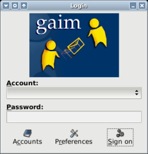
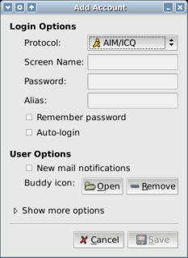
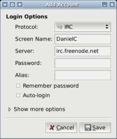

| (1) When you start Gaim, you will see a login dialog. |  |
|
(2) Click on Accounts. On the new window, click
on Add. You should see a third window like this one. |
 |
|
(3) Under Protocol select IRC.
The window will change (new entries appear, old entries disappear).
Under Server type in irc.freenode.net. Under Screen Name pick any name you like. It can only have letters, numbers and _under_scores_. No spaces allowed. Click "Save" and you're done. Note: If your name is already taken, you will have to pick a different one. |
 |